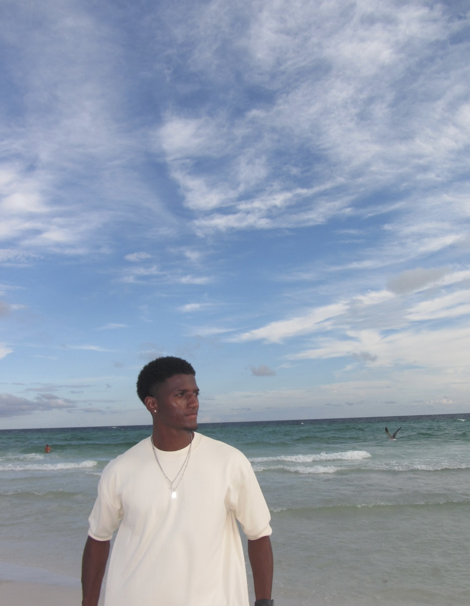

Projects

Project 1
This project focuses on creating a webpage using HTML and CSS. It includes a navigation bar, different sections, images, and a footer. This project allowed me to practice building and styling a webpage.

Fifth-Year Software Engineering Student
I am a fifth-year Software Engineering student from Davenport, Iowa, with a strong interest in web development and creating engaging digital experiences.
Outside of school, I enjoy following college football and traveling. I am always interested in learning new technologies and developing my skills as a software engineer.
This project focuses on creating a webpage using HTML and CSS. It includes a navigation bar, different sections, images, and a footer. This project allowed me to practice building and styling a webpage.
I am always open to connecting and discussing software engineering, web development, and technology.